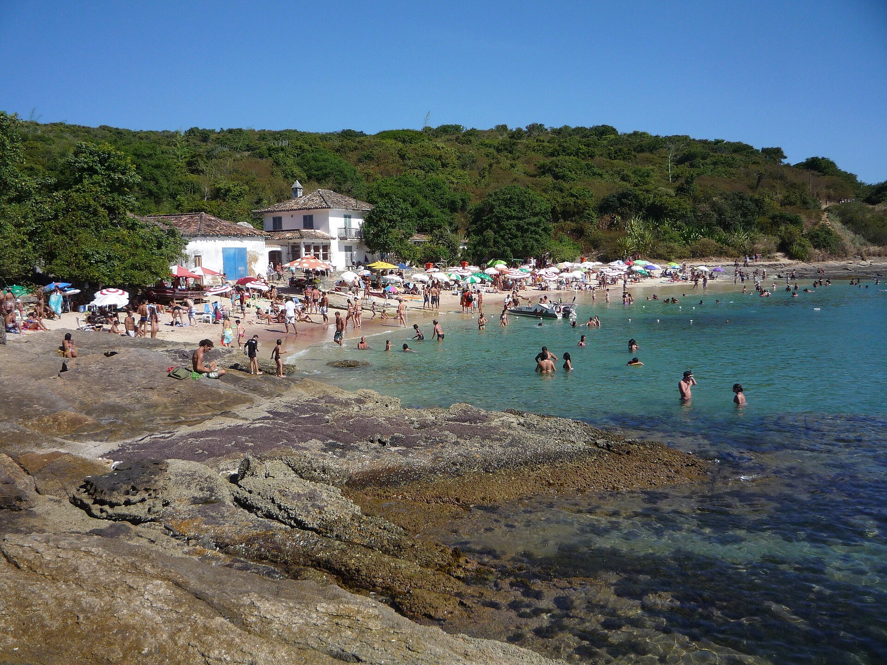
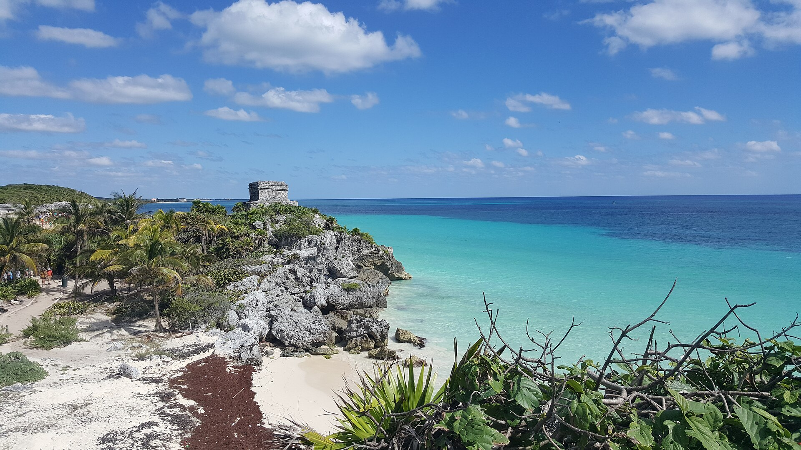

Argentina
Mar del Plata
La rambla, el mar bravío y los atardeceres desde el Torreón del Monje. Una clásica ciudad balnearia con playas para todos los gustos.
Costas para desconectar, caminar descalza y mirar el horizonte hasta que se haga de noche.
La rambla, el mar bravío y los atardeceres desde el Torreón del Monje. Una clásica ciudad balnearia con playas para todos los gustos.

Un pueblo de pescadores convertido en refugio glamoroso, con más de veinte playas de arena fina y agua turquesa a pocos minutos entre sí.

Ruinas mayas frente al mar Caribe, cenotes color turquesa y playas de arena blanca que parecen sacadas de una postal.